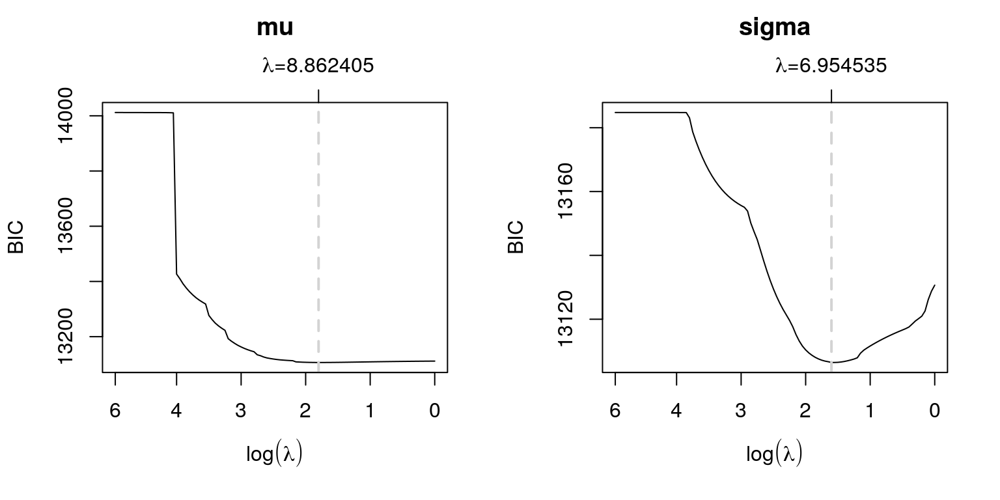
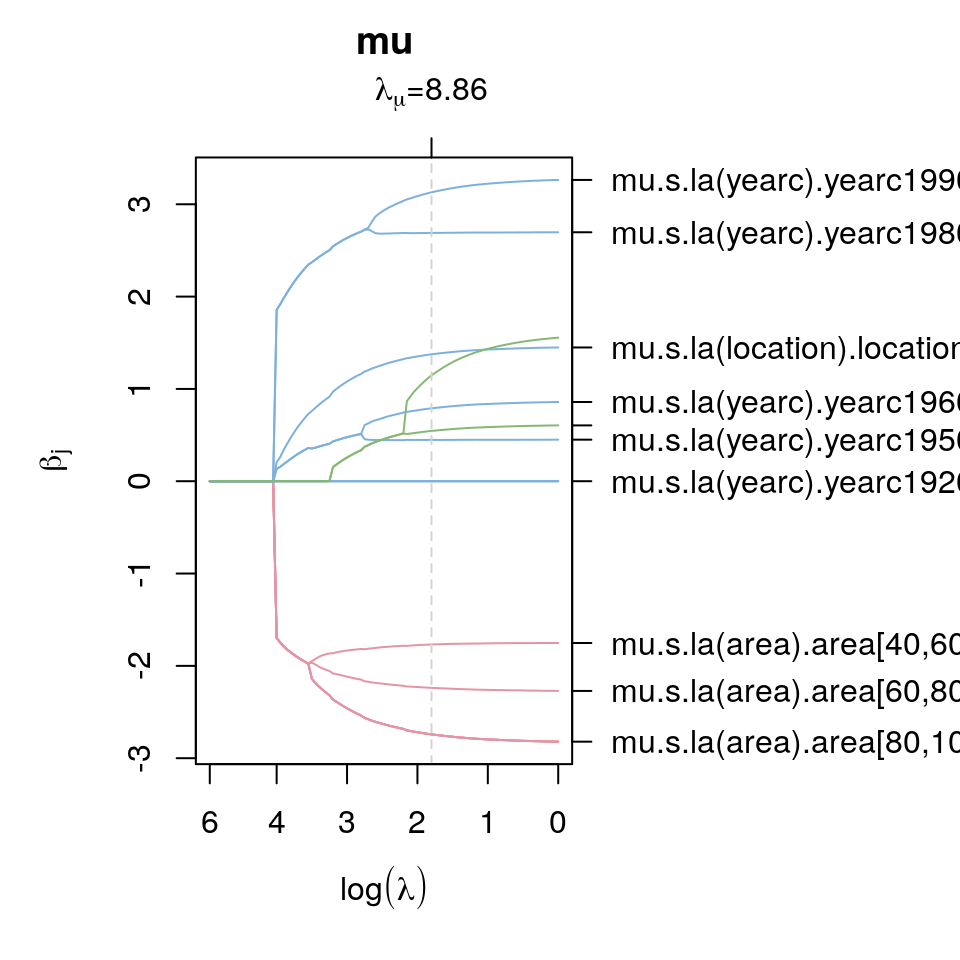
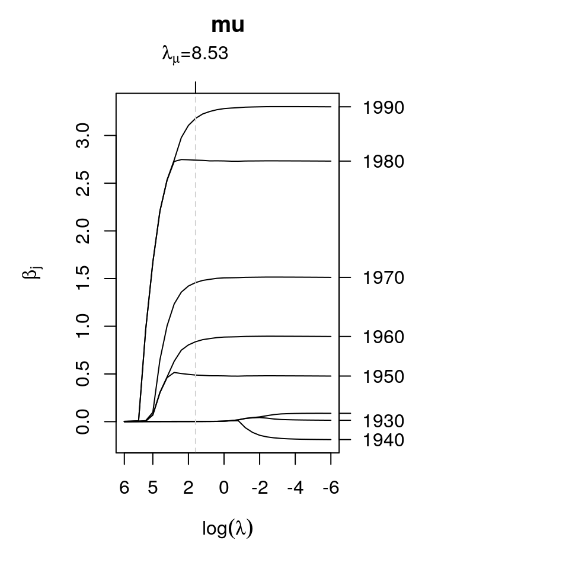
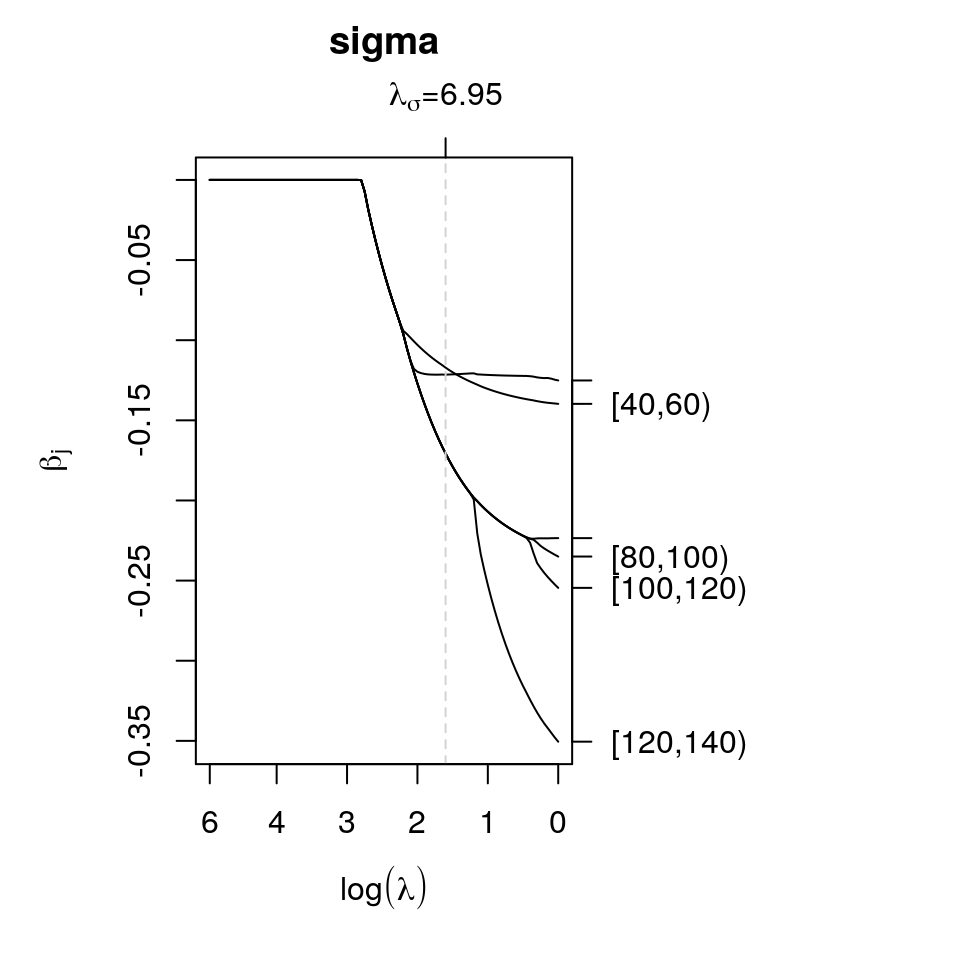

lasso.RmdThe article LASSO-type penalization in the framework of generalized additive models for location, scale and shape (Groll et al. 2019) presents a regularization approach for high-dimensional data set-ups in the framework of GAMLSS. It is designed for linear covariate effects and is based on L\(_{1}\)-type penalties. The following three penalization options are provided:
This vignette provides some example code how to set up LASSO-type penalized models using bamlss.
We follow the example in the article (Groll et al. 2019) and use Munich rental guide data to illustrate the modeling approach. Unfortunately, we cannot use the original data shown in the paper because of copywright reasons. However, an older version of the data is available in the supplementary materials of the Regression book (Fahrmeir et al. 2013). The data can be loaded into R with
The response is the monthly rent per square meter in Euro (rentsqm). In this example we use the year of construction (yearc), area (area) and the location classification (`location’, derived from expert knowledge) of the apartment as covariates. Following the example (Groll et al. 2019), the two continuous covariates are categorized
## Create factors of continuous covariates.
rent99$yearc <- ordered(floor(rent99$yearc / 10) * 10)
rent99$area <- cut(rent99$area, breaks = seq(20, 160, by = 20),
include.lowest = TRUE, right = FALSE, ordered = TRUE)
## Also transform to factor.
rent99$location <- as.factor(rent99$location)We fit a Gaussian GAMLSS and use for both distribution parameters, i.e. \(\mu\) and \(\sigma\), using the following code
## Model formula.
f <- list(
rentsqm ~ la(area,fuse=2) + la(yearc,fuse=2) + la(location,fuse=1),
sigma ~ la(area,fuse=2) + la(yearc,fuse=2) + la(location,fuse=1)
)
## LASSO model based on lambda grid,
## use special opt_lasso() estimation engine.
rentmodel <- bamlss(f, data = rent99, optimizer = opt_lasso, sampler = FALSE,
criterion = "BIC", nlambda = 100, multiple = TRUE, upper = exp(6), lower = exp(0))where arguments upper and lower define the limits of the LASSO tuning parameters. Estimation in this case is based on the BIC using a two dimensional grid search with \(200 \times 200\) iterations. Note that fuse=1 is used for nominal fusion and fuse=2 for ordinal fusion within the special la() model term constructor function.
The resulting marginal BIC curves can be visualized with
 In this example both tuning parameters have the same value, also indicated by the gray dashed vertical lines. The coefficient paths w.r.t. the tuning parameters can be plotted, e.g., for parameter \(\mu\), with
 The legend on the right hand side of the plot is not necessarily very nice (too long). One option to select specific paths for plotting is to set the name argument in pathplot(), e.g., plotting the coefficient paths for the year of construction for parameter \(\mu\) can be done by
 The plotting function also replaces the names of the coefficients such that the labeling in the plot is easy to read. The plot shows that very old apartments are all shrinked out of the model, whereas apartments from 1950 and younger enter the model and categories are not fused.
Similarly, the effect on parameter \(\sigma\) for the area of the apartment can be plotted by
 The plot shows that almost all categories of covariate area are fused using the BIC for tuning parameter selection and uncertainty seems to be lowest for larger apartments.
In bamlss, it is also possible to estimate single tuning parameters for each LASSO term. The main advantage of the single tuning parameter selection is that in principle classical LASSO and fused LASSO terms can be mixed, which is not the case if only single tuning parameters, one for each distributional parameter (e.g., \(\mu\) and \(\sigma\) using the Gaussian distribution), is used.
E.g., using the Munich rent data, we could estimate the model with the default backfitting model fitting engine opt_bfit()
rentmodel_s <- bamlss(f, data = rent99, optimizer = opt_bfit, sampler = FALSE,
criterion = "BIC", nu = 1, start = coef(rentmodel, mstop = lasso_stop(rentmodel)))using the estimated parameters of the first model as starting values (mstop is the optimum stopping iteration of the opt_lasso() optimizer). Note that we also optimize the step length of the backfitting algorithm by setting nu = 1. To compare both models by BIC, the lasso_stop() functions returns the optimum iteration of the opt_lasso() optimizer
## [1] 6764
## attr(,"stats")
## logLik logPost BIC edf lambda.mu
## -6.492676e+03 -4.811313e+05 1.310644e+04 1.507328e+01 8.862405e+00
## lambda.sigma
## 6.954535e+00along the estimated degrees of freedom and the BIC. Similarly, the BIC of the second model can be extracted with
## [1] 13102.81which is slightly a bit smaller than the first model suggesting that the grid search method is most probably enough in this case.
Using the lasso_stop() function, we can also extract the corresponding predictions.
Note that the default in coef() and predict() would be to use the last LASSO iteration otherwise.
Fahrmeir, Ludwig, Thomas Kneib, Stefan Lang, and Brian Marx. 2013. Regression – Models, Methods and Applications. Berlin: Springer-Verlag.
Groll, Andreas, Julien Hambuckers, Thomas Kneib, and Nikolaus Umlauf. 2019. “LASSO-Type Penalization in the Framework of Generalized Additive Models for Location, Scale and Shape.” Computational Statistics & Data Analysis 140: 59–74. https://doi.org/10.1016/j.csda.2019.06.005.
Umlauf, Nikolaus, Nadja Klein, Achim Zeileis, and Thorsten Simon. 2021. bamlss: Bayesian Additive Models for Location Scale and Shape (and Beyond). https://CRAN.R-project.org/package=bamlss.